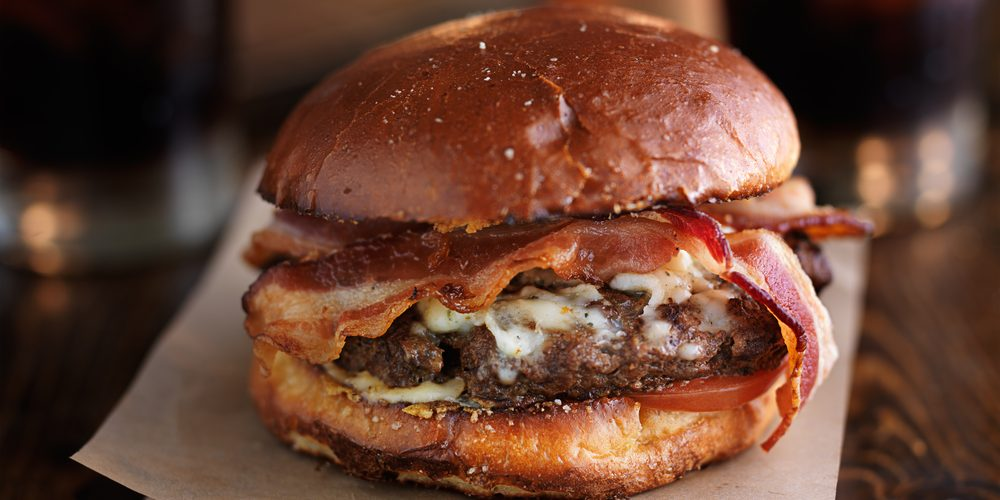

Burger maison

Le burger est un plat incontournable à table. Vous allez voir qu'il n'y a rien de compliqué avec notre recette
Les ingrédients pour faire un burger au top
- 4 tranches de mozzarella
- 2 pains pour hamburger
- 2 steaks hachés
- 4 tomates confites à l'huile
- roquette
- 60g de basilic
- 30g de pignons
- 30g de parmesan
- 15cl d'huile d'olive
- 30g de moutarde
- 15cl de vinaigre balsamique
- sel
- poivre
Les étapes pour faire un burger au top
- On commence par la sauce : hacher le basilic.
- Mixer les pignons, l'huile et le parmesan.
- A la fin, ajouter le basilic et mixer encore une fois jusqu'à ce que la sauce soit lisse. Saler, poivrer.
- A côté dans un bol, mélanger le jaune d'oeuf, un peu de sel, du poivre, la moutarde et le vinaigre. Fouetter en versant peut à peut de l'huile jusqu'à épaississement.
- Mélanger les deux bases de sauce ensemble pour obtenir la sauce pesto pour les burgers.
- Pour les burgers : marquer le steak en cuisson et assaisonner de sel et de poivre.
- Réchauffer les buns à la poêle ou au four à 180°C (thermostat 6) pendant 2 minutes.
- Déposer 2 tranches de mozzarella sur chaque steak après les avoir retournés. Couvrir pendant 2 minutes pour faire fondre le fromage.
- Étaler une cuillère à soupe de sauce au pesto sur chaque face des pains.
- Déposer la viande avec le fromage sur la partie inférieure des buns et ajouter 2 tranches de tomates confites et la roquette.
- Fermer le bun et servir... avec des frites !